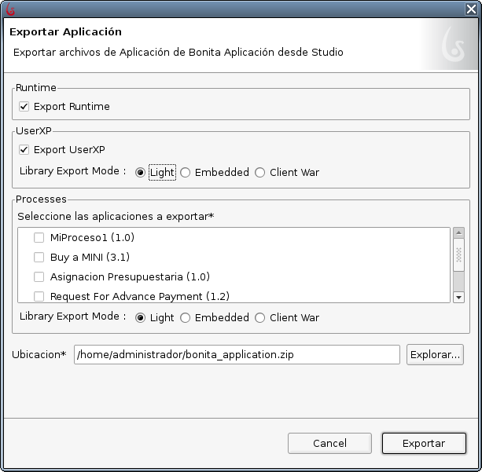
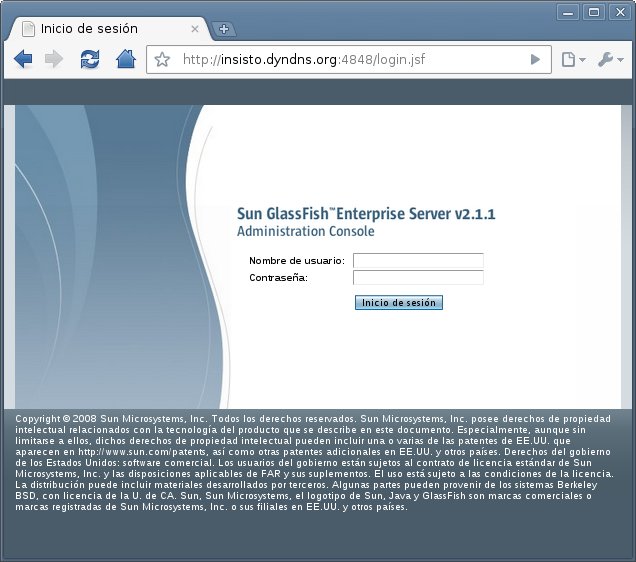
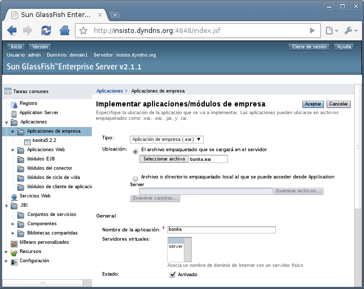
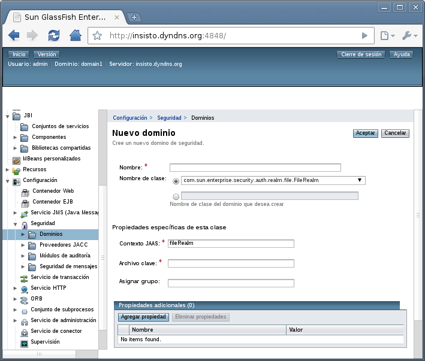

Como Instalar Bonita Open Solution 5.2.2 sobre Glassfish 2.1.1 usando Postgresql como RDBMS.
Este artículo muestra paso a paso la instalación de Bonita Open Solution 5.2.2 (BOS) sobre Glassfish 2.1.1. También se detalla el uso de Postgresql como RDBMS para BOS.
Pre requisitos:
· Tener Java JDK instalado y configurado. Asegurar que variable JAVA_HOME apunte al directorio adecuado donde se instalo la JDK y que la ruta JAVA_HOME/bin este en el PATH. · Tener ANT instalado y configurado. Asegurar que variable ANT_HOME apunte al directorio adecuado donde se instalo ANT y que la ruta ANT_HOME/bin este en el PATH. · Tener Glassfish instalado. Lo puede descargar e instalar desde el siguiente enlace: https://glassfish.dev.java.net/downloads/v2.1.1-final.html · Tener BOS 5.2.2 instalado. Lo puede descargar e instalar desde el siguiente enlace: http://www.bonitasoft.com/products/downloading.php?f=http://download.forge.objectweb.org/bonita/BOS-5.2.2-lin-setup.zip · Tener Postgresql 8.x instalado. Lo puede descargar e instalar desde el siguiente enlace: http://wwwmaster.postgresql.org/download/mirrors-ftp/source/v8.4.4/postgresql-8.4.4.tar.gz
Pasos:
1.- Crear las Bases de Datos en Postgresql requeridas por BOS. 1.1.- Crear Base de Dato bonita_core. Por línea de comandos puede ingresar la siguiente secuencia de comandos:
>psql
CREATE DATABASE bonita_core WITH OWNER = postgres ENCODING = 'UTF8';
\q
O puede usar la interfaz gráfica de su preferencia tal como pgAdmin. Ver el tutorial : http://www.pgadmin.org/docs/1.4/pg/tutorial.html 1.2.- Crear Base de Dato bonita_history. Por línea de comandos puede ingresar la siguiente secuencia de comandos:
>psql
CREATE DATABASE bonita_history WITH OWNER = postgres ENCODING = 'UTF8';
\q
O puede usar la interfaz gráfica de su preferencia tal como pgAdmin.
2.- Iniciar BOS.
3.- Exportar Aplicación. 31.1.- Ir al menú Proceso. 3.2.- Seleccione la opción Exportar Aplicación... 3.3.- En la pantalla que se presenta, ver Figura 1, seleccionar las opciones:
Export Runtime Export User XP / Light
3.4.- Seleccione un directorio de destino para el archivo bonita_application.zip a exportar. 3.5.- Pulse el botón Exportar.

Figura 1: Pantalla Exportar Aplicación
4.- Ir al directorio seleccionado en el paso 3.4.
5.- En el directorio seleccionado descomprimir el archivo bonita_application.zip. Esto debe crear un directorio denominado bonita_application con el siguiente contenido:
Directorio runtime Directorio web Archivo README.txt
Desde ahora nos referiremos a este directorio con el nombre BONITA_APPLICATION
6.- Ir al directorio BONITA_APPLICATION/runtime/conf.
7.- Editar el Archivo hibernate-core.properties, este archivo contiene las propiedades para la configuración de acceso a la base de datos central de BOS usando hibernate.
7.1.- Establecer los siguientes valores para la conexión con Postgresql:
hibernate.dialect org.hibernate.dialect.PostgreSQLDialect hibernate.connection.driver_class org.postgresql.Driver
hibernate.connection.url jdbc:postgresql:localhost:5432/bonita_core
hibernate.connection.shutdown true
hibernate.connection.username postgres
hibernate.connection.password suPostgresPassword
7.2.- Grabar el archivo y cerrar editor. 7.3.- Editar el Archivo hibernate-history.properties, este archivo contiene las propiedades para la configuración de acceso a la base de datos histórica de BOS usando hibernate.7.4.- Establecer los siguientes valores para la conexión con Postgresql:
hibernate.dialect org.hibernate.dialect.PostgreSQLDialect hibernate.connection.driver_class org.postgresql.Driver
hibernate.connection.url jdbc:postgresql:localhost:5432/bonita_history
hibernate.connection.shutdown true
hibernate.connection.username postgres
hibernate.connection.password suPostgresPassword
7.5.- Grabar el archivo y cerrar editor.
8.- Ir al directorio BONITA_APPLICATION/runtime/lib.
9.- Copiar allí el .jar del driver de Postgresql. Copiar el archivo: postgresql-8.xxx.jdbc4.jar Asegúrese de usar el archivo con la versión adecuada para su instalación de Postgresql y que sea la especificación jdbc4.
10.- Ir al directorio BONITA_APPLICATION/runtime.
11.- Ejecutar el comando de ANT para Iniciar el Shema de base de datos usando la configuración antes suministrada: >ant init-db Al terminar de ejecutarse el comando debemos contar con nuestras base de datos de postgresql bonita_core y bonita_history ya configuradas con la estructura de tablas adecuada.
12.- Crear el Archivo de Aplicación Empresarial de Java .ear.
12.1.- En el directorio BONITA_APPLICATION/runtime ejecutar el mando de ANT para iniciar la construcción del archivo .ear de la aplicación.
Comando: >ant ear.ejb3 Se emitirán una serie de mensajes y esperamos por el mensaje de que todo se realizó con exito: BUILD SUCCESSFUL Esto genera el archivo bonita.ear en el directorio BONITA_APPLICATION/runtime/ear/ejb3 y este es el archivo que podemos desplegar en nuestro servidor de aplicaciones.
13.- Desplegar archivo bonita.ear en Glassfish.
13.1.- Ir a la página de administración de Glassfish. Abrir un explorador web e ingresar la ruta: http://yourserverhost:4848 13.2.- En la ventana que se abre, ver Figura 2, ingresar las credenciales de administrador. Normalmente los valores por defecto son para el usuario: admin y para la clave: adminadmin.

Figura 2: Inicio de sesión en Glassfish 2.1.1. 13.3.- Una vez que hemos ingresado ir a la opción Aplicaciones. 13.4.- Ir a la opción Aplicaciones de empresa. 13.5.- En la tabla de Aplicaciones de empresa implementadas hacer click en el botón implementar... 13.6.- En la sección denominada Implementar aplicaciones / módulos de empresa, ver Figura 3, hacer click en el botón seleccionar archivo. Allí seleccionamos el archivo bonita.ear que generamos en el paso 12 y pulsamos el botónAceptar.
Esperamos por el mensaje de que la operación se realizo con éxito y debemos poder ver en la tabla de Aplicaciones de empresa implementadas nuestra aplicación bonita recién desplegada.

Figura 3: Desplegar bonita.ear
14.- Configurar bonita.
14.1.- Configurar Realm 14.1.1.- En la consola de administración de Glassfish ir al menú configuración (parte inferior izquierda). 14.1.2.- Allí seleccionar Seguridad. 14.1.3.- Seleccionar Dominios. 14.1.4.- En la tabla de Dominios pulsar el botón Nuevo... 14.1.5.- En la ventana que abre, ver Figura 4, ingresar los siguientes valores: Nombre : processBaseRealm Nombre de clase del dominio que desea crear: org.processbase.realm.ProcessBaseRealm
14.1.6.- Pulsamos el botón Aceptar. Ya deberíamos poder ver en la tabla de Dominios el nuevo dominio que acabamos de crear.

Figura 4: Configurar processBaseRealm
14.2.- Configurar Libs. 14.2.1.- Cerrar sesión de administración de Glassfish (logout / salir). 14.2.2.- Detener servidor Glassfish. 14.2.3.- Ir al directorio de instalación de Glassfish, al que desde ahora denominaremos GLASSFISH_HOME. 14.2.4.- Ir a GLASSFISH_HOME/lib. 14.2.5.- Copiar archivo ProcessBaseRealm.jar, este archivo lo pueden descargar de http://processbase.googlecode.com/files/processbase2.zip 14.2.6.- Ir al directorio GLASSFISH_HOME/domains/domain1/config 14.2.7.- Editar archivo login.conf. Agregar las siguientes entradas al archivo:
processBaseRealm{
org.processbase.realm.ProcessBaseLoginModule required;
};
ProcessBaseRealm{
org.processbase.realm.ProcessBaseLoginModule required;
};
14.2.8.- Guardar Archivo y cerrar editor. 14.2.9.- Ir al directorio GLASSFISH_HOME/domains/domain1/applications/j2ee-apps/bonita/lib. 14.2.10.- Copiar los archivos siguientes:
activation-1.1.1.jar, app-1.2.0.jar, bonita-5.2.2.jar, bonita-server-5.2.2.jar,
chartengineapi-2.5.1.jar, com.ibm.icu_4.0.1.v20090822.jar, common-2.5.0.jar, common-3.5.0.jar,
commons-fileupload-1.2.1.jar, commons-io-1.3.2.jar, contenttype-3.4.0.jar, coreapi-2.5.1.jar,
dataadapterapi-2.5.1.jar, dteapi-2.5.1.jar, ecore-2.5.0.jar, engineapi-2.5.1.jar, jaxen-1.1.1.jar,
jdom-1.0.jar, jericho-html-3.1.jar, jobs-3.4.100.jar, js.jar, LiferayRoleResolver.jar, modelapi-2.5.1.jar,
osgi-3.5.0.jar, ow2-ejb-3.0-spec-1.0.2.jar, preferences-3.2.300.jar, registry-3.4.100.jar, runtime-3.5.0.jar,
scriptapi.jar, scriptapi-2.5.1.jar, xalan-2.6.0.jar, xercesImpl-2.6.2.jar, xml-apis-1.0.b2.jar, xmlParserAPIs-2.6.2.jar, xom-1.0.jar
Estos archivos los encuentra en el directorio BONITA_APPLICATION/web/lib. Si alguno de los archivos ya existe lo puede omitir.
14.3.- Configurar properties y xml. 14.3.1.- Ir al directorio GLASSFISH_HOME/domains/domain1/applications/j2ee-apps/bonita/bonita-ejbjar_jar. 14.3.2.- Editar los siguientes archivos: hibernate-core.properties hibernate-core-default.properties 14.3.3.- Establecer los siguientes valores:
hibernate.dialect org.hibernate.dialect.PostgreSQLDialect hibernate.connection.driver_class org.postgresql.Driver
hibernate.connection.url jdbc:postgresql:localhost:5432/bonita_core
hibernate.connection.shutdown true
hibernate.connection.username postgres
hibernate.connection.password suPostgresPassword
14.3.4.- Guardar y cerrar archivos. 14.3.5.- Editar los siguientes archivos: hibernate-history.properties hibernate-history-default.properties
14.3.6.- Establecer los siguientes valores:
hibernate.dialect org.hibernate.dialect.PostgreSQLDialect
hibernate.connection.driver_class org.postgresql.Driver
hibernate.connection.url jdbc:postgresql:localhost:5432/bonita_history
hibernate.connection.shutdown true
hibernate.connection.username postgres
hibernate.connection.password suPostgresPassword
14.3.7.- Guardar y cerrar archivos. 14.3.8.- Editar los siguientes archivos: bonita-default-environment.xml bonita-environment.xml 14.3.9.- En sección <environment-factory> Establecer el siguiente valor:
<object name='security' class='org.ow2.bonita.facade.EJB3SecurityContext' />
14.3.10.- Guardar y cerrar archivos. 14.3.11.- Reiniciar Glassfish.
15.- Fin.
Con estos pasos ya tenemos instalado el motor de BOS como un EJB3 sobre Glassfish.
Con una configuración JNDI en el archivo jndi.properties de nuestra aplicación como la siguiente:
java.naming.factory.initial= com.sun.enterprise.naming.SerialInitContextFactory
java.naming.factory.url.pkgs= com.sun.enterprise.naming
java.naming.factory.state= com.sun.corba.ee.impl.presentation.rmi.JNDIStateFactoryImpl
java.naming.provider.url= iiop:Your.Server.Host:3700
java.naming.provider.bonitaurl= iiop:Your.Server.Host:3700
java.naming.provider.bamurl= iiop:Your.Server.Host:3700
java.security.auth.login.config= appclientlogin.conf
Ya se puede acceder a la API de BOS 5.2.2 de la siguiente forma:
Final RuntimeAPI runtimeAPI = AccessorUtil. getAPIAccessor (OXConstants. BONITA_EJB_ENV ).getRuntimeAPI();
public ProcessInstanceUUID startNewProcess(ProcessDefinitionUUID uuid, Map<String, Object> vars) ProcessNotFoundException, VariableNotFoundException, Exception { throws
programmaticLogin .login( , , , ); false"processBaseRealm"""currentUserUID
returnruntimeAPI .instantiateProcess(uuid, vars);
}
Note el uso de programaticLogin antes de cada llamada a la API.
Sus aplicaciones Java sólo van necesitar los siguientes .jar del lado del cliente:
asm-3.1.jar
bonita-client-5.2.2.jar
Estos archivos los encuentra en el directorio:
BONITA_APPLICATION/runtimelib/client
Suerte y hasta una próxima entrega.